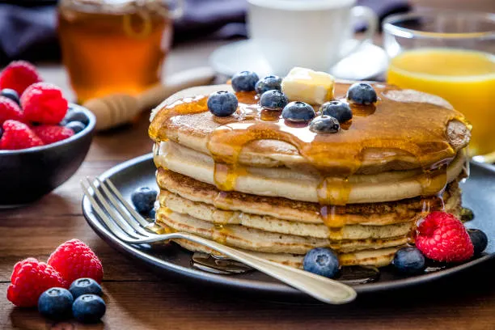

Vrni se
Recept za ameriške palačinke

Sestavine:
- 200g moke
- 2 jajci
- 250ml mleka
- 2 žlici sladkorja
- 1 pecilni prašek
- ščepec soli
- 2 žlici stopljenega masla
Postopek:
- V skledi zmešamo moko, sladkor, pecilni prašek in sol.
- Dodamo jajci, mleko in stopljeno maslo ter dobro premešamo.
- Na segreti ponvi pečemo manjše palačinke približno 2 minuti na vsaki strani.
- Postrežemo z javorjevim sirupom, sadjem ali čokoladnim prelivom.